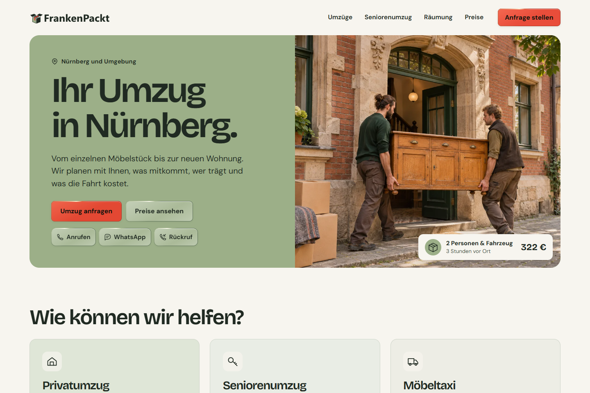
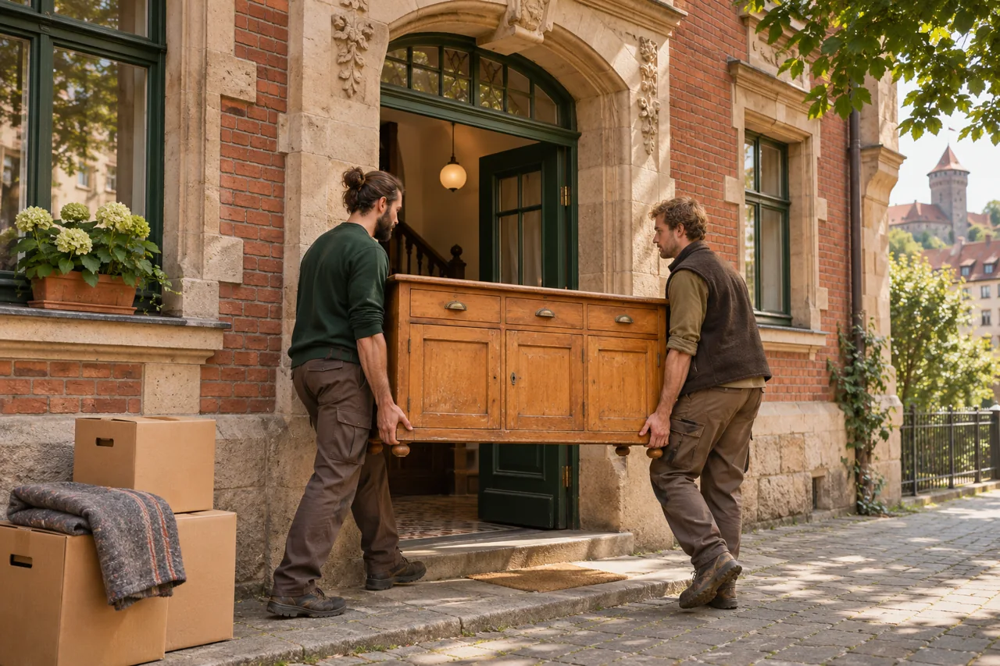
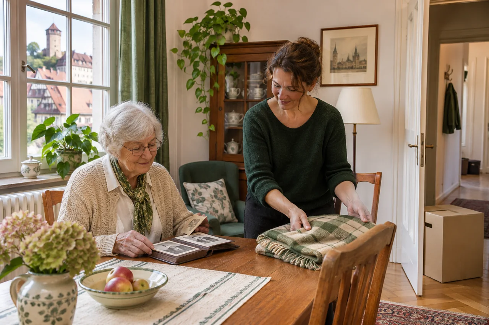

دليل تنفيذ الموقع والتسويق · نورنبرغالهوية وتجربة العميل
نقلة واضحة من أول شاشة
نبدأ بالأسر وكبار السن الذين يطلبون نقل أثاث من منطقة نورنبرغ. بعد فتح الموقع يستطيع الزائر أن يعرف هل نخدمه، وما الذي يدخل في السعر، وكيف يتحدث إلى شخص قبل أن يقرر.

الساج#9CAF88
مساحة افتتاحية هادئة وفواصل للأقسام. النص فوقها داكن.
العاجي#F7F5EF
خلفية صفحات الشرح والأسعار والنموذج.
أحمر الطماطم#E8412C
زر الإجراء الرئيسي وشريط الصندوق في الشعار.
كيف يقرأها العميل؟
يظهر شعار FrankenPackt بحبر داكن #202A22. على الساج يبلغ تباينه 6.29:1، وعلى العاجي 13.61:1. على الهاتف تظهر أزرار الاتصال وواتساب وطلب معاودة الاتصال جنبًا إلى جنب. يمرّ الضوء على حافة الزر الزجاجي، وتتوقف الحركة عند تفضيل تقليل المؤثرات.
قرار الإطلاق. تستخدم السيارة عبارة Umzüge in Franken، وتبيّن صفحات البيع أن التسعير المحلي ينطلق من 90453 Nürnberg. اسم المنطقة في الشعار يعبّر عن الهوية، وحدود كل باقة تُكتب عند السعر.
المرجع · WCAG 2.2، تباين النصوص. الألوان الثلاثة مأخوذة من الأكواد الظاهرة في صورة المالك، والحبر الداكن لون وظيفي للقراءة.
FrankenPackt · الموقع والصور والحملات١ / ٤
الموقع الألماني
لكل نية بحث صفحة تخدمها
من يبحث عن نقل شقته يصل مباشرة إلى خدمة النقل. ومن ينظّم انتقال والديه يجد شرحًا أهدأ وخيار معاودة الاتصال. يمكن لأي منهما الوصول إلى السعر قبل إعطاء بياناته.
| الصفحة | ماذا يحصل عليه الزائر؟ | المسار |
|---|
| الرئيسية | خدمة النقل من نورنبرغ، مثال سعر، اختيار الخدمة أو طلب الاتصال. | / |
| النقل المحلي | حجم الفريق والمركبة، حدود الوقت والمسافة، وعرض 789 € بوصفه وجهة إعلان النقل. | /umzug/ |
| نقل كبار السن | تخطيط على الهاتف، تحديد الأغراض، وإشراك أحد أفراد الأسرة حسب رغبة العميل. | /seniorenumzug/ |
| نقل قطعة | أين تُسلّم القطعة، ومن يساعد في حملها، وشروط النقل من رصيف إلى رصيف. | /moebeltaxi/ |
| عند إخلاء مسكن | جرد الأثاث الذي سيبقى قيد الاستخدام ونقله. جهة التخلص يختارها العميل ويكلّفها بنفسه. | /raeumung/ |
| الأسعار والحاسبة | تقدير باقة وفق شروطها، أو الانتقال إلى مراجعة شخصية للأعمال التي تخرج عنها. | /preise/ |
| الطلب وتأكيده | طلب عرض أو معاودة اتصال، ثم رقم مرجعي وخطوة المتابعة. | /anfrage/
/danke/ |
| بيانات المشغّل والخصوصية | بيانات الجهة المتعاقدة ومعالجة بيانات الطلب؛ تُدخل التفاصيل الفعلية قبل النشر العام. | /impressum/
/datenschutz/ |
كيف تعطي الحاسبة جوابًا أمينًا؟
تبدأ الباقة المدمجة من 498 € لنقل أثاث مجهّز من الأرضي إلى الأرضي، حتى 20 م³ في رحلتَي تحميل، و35 كم وخمس ساعات إجمالًا. نثبّت السعر بعد مراجعة الجرد ووزن كل حمولة والوصول. وباقة 789 € لعاملين وسيارة لسبع ساعات إجمالًا تشمل الطريق، وبحد 50 كم إجمالًا. يَعرض الدليل أيضًا خدمة القطعة بـ78 € وفريق الثلاث ساعات بـ322 € بشروطهما.
مثال قرار. كتب العميل «خزانة كبيرة، طابق ثالث، بلا مصعد». نطلب أبعاد الخزانة ومسار الحمل ونراجع الوصول والوزن وعدد الرحلات قبل تأكيد سعر مكتوب. للأغراض الثقيلة أو غير المألوفة نحدّد أولًا إن كانت تلائم السيارة والطاقم.
مرجع الباقات · نموذج Ag الداخلي. الأسعار في المسودة للمستهلك وتشمل 19% وفق فرضية النموذج؛ يعتمد نشرها على الوضع الضريبي والتكاليف ووزن السيارة الحقيقي.
FrankenPackt · الموقع والصور والحملات٢ / ٤
تكليف المصوّر
نُصوّر ما يريد العميل التأكد منه
هل سيتّسع الأثاث داخل السيارة؟ كيف سيُحمى؟ ومن سيستمع إلى رغبات أحد الوالدين قبل يوم النقل؟ هذه الأسئلة تحدد الصور التي تستحق التصوير.

نقل الأثاث · صورة توضيحية للمعاينة
التخطيط مع كبير السن · صورة توضيحية للمعاينة| اللقطة المطلوبة من الفريق | مكان استخدامها |
|---|
| فريق الميدان بجانب سيارة 3.5 طن أثناء تجهيز قطعة حقيقية. | الرئيسية، الملف التجاري على Google، وغلاف Kleinanzeigen. |
| يد تثبّت بطانية على زاوية خزانة قبل حملها. | صفحة نقل الشقق، وصور إعلان البحث عند أهلية الحساب. |
| داخل السيارة وتظهر معدات التثبيت ومساحة التحميل. | صفحة النقل والصورة الثانية في الإعلان المحلي. |
| شخص كبير السن يشرح ما يرغب في نقله والموظف يدوّن، عند مستوى العين. | صفحة كبار السن، بإذن استخدام واضح. |
| تسليم قطعة واحدة عند نقطة تحميل آمنة ومفهومة. | صفحة نقل القطع لتوضيح حدود خدمة الرصيف. |
| الأغراض التي اختار صاحبها الاحتفاظ بها داخل غرفة مرتبة. | صفحة النقل عند إخلاء المسكن. |
ماذا نسلّم لكل قناة؟
نلتقط للأولى نسخة أفقية للموقع وعمودية مستقلة للهاتف حتى يبقى حامل الأثاث والقطعة ظاهرين. نحتفظ بالأصل، ونصدّر صور الويب بصيغة WebP ووصف ألماني مفيد عند الحاجة. ننشر صور الفريق والمعدات بإذن، ونتفادى أوراق العميل وصور العائلة والعناوين في الخلفية. تحتفظ صور العمل بألوانها الطبيعية؛ ألوان العلامة تظهر في التصميم والملابس والسيارة.
إعلان Google Search يبدأ بالنص. حين يصبح الحساب مؤهلًا لصور الإعلان نُجهّز صورًا مربعة وأفقية مستقلة عن صور الشاشة. في Kleinanzeigen نستخدم صور النشاط التي نملك حقها. تصوّر السيارة المرفق مرجع لتطبيق الألوان على المركبة.
المصادر · أصول الصور في Google Ads · الصور في الملف التجاري · قواعد Kleinanzeigen.
FrankenPackt · الموقع والصور والحملات٣ / ٤
اختبار واحد بسقف معلوم
من نقرة البحث إلى نقلة مدفوعة
نرصد 350 € لأول شهر للإعلانات، ونبدأ باختبار Google واحد قدره 118 € من هذا المبلغ. الاستهداف باللغة الألمانية، لمن يتواجدون فعليًا أو عادةً في مدينة نورنبرغ. الخدمة الأساسية هي نقل أثاث بفريق وسيارة.
| القناة | التنفيذ بعد اعتماد الإطلاق |
|---|
| Google Search | نبدأ بكلمتين بمطابقة تامة، umzugsunternehmen nürnberg preise وتقديرها 5.29 € للنقرة، وumzugsunternehmen nürnberg وتقديرها 9.07 €. يوجّه الإعلان إلى صفحة النقل وباقة الفريق 789 € بشروطها. خلال أول 48 ساعة نراجع عبارات البحث والمكالمات الفائتة. الطلبات الخاصة بوظيفة أو تأجير سيارة أو التخلص من المخلفات تُستبعد من حملة النقل. |
| Kleinanzeigen | إعلان تجاري واحد في موقع المقر للباقة المدمجة من 498 €، بصور النشاط واشتراطات الطوابق والمسافة والجرد. تبدأ المحادثة برسائل المنصة، ثم تسجّل في سجل الطلبات بمصدرها. أي ترويج مدفوع يُحسب ضمن السقف عند اعتماده. |
| ملف Google التجاري | بعد التحقق من النشاط نضيف الخدمات ورقم الرد وساعات العمل والصور الأصلية. نسأل كل عميل أكمل نقلته عن تقييم صادق. مجموعة كبار السن وصفحة نقل الأثاث جاهزتان للتوسع بعد ظهور نتائج البحث الأول. |
قرار التمويل التالي
باقة 789 €تتحمل 118.17 € كلفة اكتساب طلب منفَّذ ومدفوع بالكامل، بحسب تقدير Ag وهامش مستهدف 20%.
باقة 498 €تتحمل 34.70 €. إذا أنفقنا 118 € وجاءت نقلة واحدة بهذه الباقة، نراجع الاستهداف والعرض قبل زيادة الإنفاق.
مع متوسط نقرة بين 5.29 و9.07 € تشتري التجربة نحو 13–22 نقرة، حسب السعر الفعلي وتوافر البحث. عند بلوغ السقف نتابع العروض المفتوحة حتى الحسم. إذا غطّت النقلة المحصّلة تكلفة الإعلان مع بقاء الهامش الفعلي، يمكن إتاحة دفعة أخرى. وإذا كثرت اتصالات غير مناسبة، نصلح الإعلان أو شرح الباقة أولًا.
من الإعلان إلى الحجز والتحصيل
يتبع اسم الإعلان والخدمة الطلب حتى التحصيل. يعرض سجلّ المتابعة طلبات معاودة الاتصال، ويظهر للعميل رقم مرجعي بعد الإرسال. قبل الحجز يراجع الموظف التكلفة ويوثّق الموعد والنطاق وموافقة العميل على نسخة العرض. عند إدخال مصروف الإعلان الفعلي يُقارَن به الهامش المحصّل، مع احتساب المردودات.
قبل البث. إدخال المشغّل ووسائل التواصل الحقيقية، التثبت من التأمين والحمولة، مراجعة شروط الباقات، اختبار طلب ومعاودة اتصال وإلغاء ودفعة مستردة. تُراجع أهلية نشاط النفايات مستقلة قبل إنشاء حملة له.
أرقام CPC تقديرات DataForSEO لمدينة نورنبرغ، وليست رسومًا مدفوعة من FrankenPackt. المصادر · ميزانية Google الإجمالية · إعدادات الموقع الجغرافي · Umweltamt Nürnberg.
FrankenPackt · الموقع والصور والحملات٤ / ٤